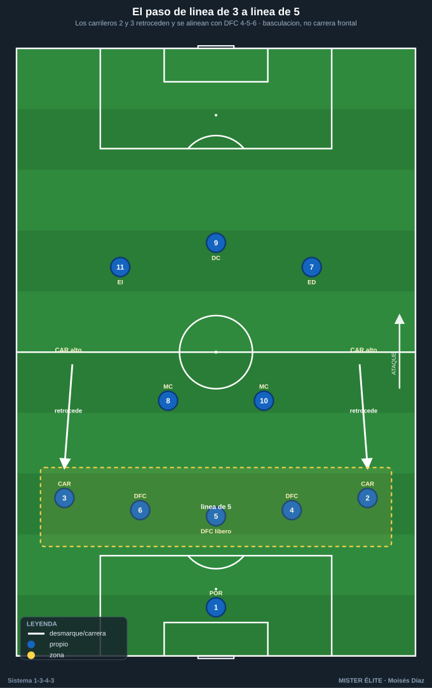
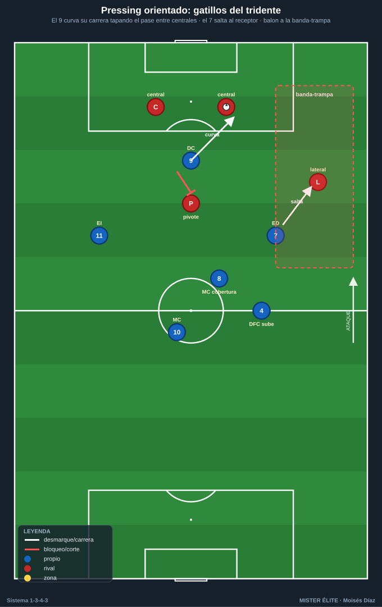
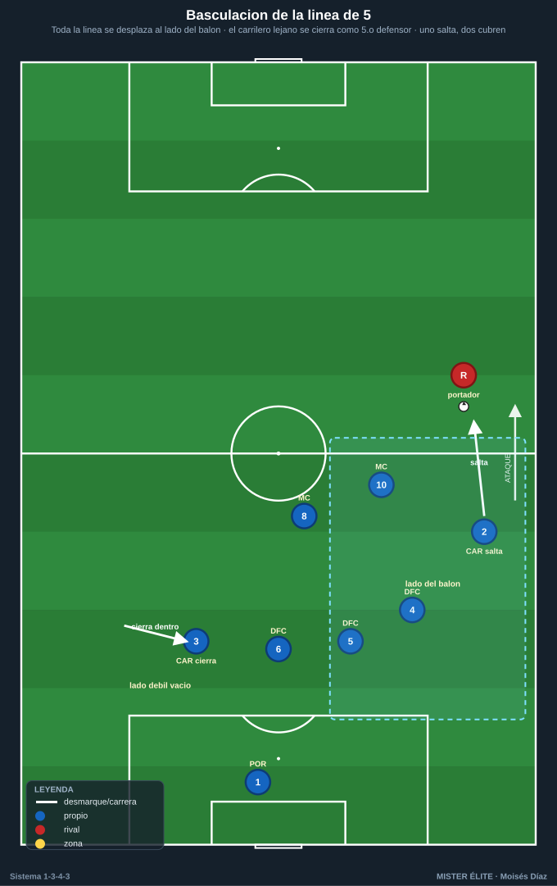

Módulo 02 · Fase defensiva del 1-3-4-3
Convención: POR 1 · DFC 4-5-6 (5 = líbero) · CAR 2/3 · MC 8/10 · ED 7 · DC 9 · EI 11. Estructura sin balón dominante: la línea de 3 (DFC 4-5-6) se convierte en línea de 5 cuando los carrileros bajan → 1-5-2-3 (presión media) o 1-5-4-1 (repliegue).
La defensa del 1-3-4-3 vive de un mecanismo central: pasar de la línea de 3 a la línea de 5 sin romperse, y presionar arriba con el tridente de forma orientada (no a ciegas). Todo lo demás (coberturas, fuera de juego, gestión del riesgo a la espalda) se deriva de ahí.
1. Roles defensivos por demarcación
- POR 1 — portero-líbero. Manda la altura de los 3 DFC con la voz, cierra la espalda de la línea (posición adelantada 14-18 m del marco con bloque medio/alto), barre balones a la espalda como escoba. Marca el fuera de juego junto al 5. Cuando la línea sube para dejar al rival en posición ilegal, acompaña la subida como escoba adelantada.
- DFC 5 — líbero organizador. El cerebro. No salta de inicio: da cobertura permanente a 4 y 6. Cubre el espacio interior y la diagonal a la espalda. Último hombre que decide el fuera de juego.
- DFC 4 (der) y 6 (izq) — stoppers con cobertura. Saltan a marcar al delantero/interior rival que cae a su zona; salen a presionar al que recibe de espaldas o conduce por su pasillo. Siempre cubiertos por el 5 (uno salta, el otro y el 5 cierran).
- CAR 2/3 — carrileros. Bajan para formar la línea de 5. Marcan al extremo/lateral rival, cierran el carril exterior. Cuando el balón está al lado contrario, basculan hacia dentro y casi forman un quinto central.
- MC 8 — pivote/ancla. Delante de la línea de 3/5. Tapa el espacio entre líneas, achica al mediapunta, y baja a la línea como tercer central momentáneo cuando un central salta y deja hueco. Primer relevo.
- MC 10 — ofensivo. Presiona más arriba, ayuda al tridente en la primera presión y vuelve. Marca al segundo pivote o interior rival.
- Tridente 7-9-11 — primera presión. El 9 orienta (corta el pase entre centrales rivales para empujar a una banda). El 7/11 saltan al carrilero/lateral rival de su lado: son el gatillo del pressing exterior. En repliegue bajan a la línea del carrilero (1-5-4-1).
2. El paso de 3 a 5: bloques y alturas

| Bloque | Altura de la 1.ª presión | Estructura sin balón | Idea |
|---|---|---|---|
| Alto | Tridente presiona en campo rival (línea def. ~40-45 m) | Carrileros muy arriba, 1-3-2-5 → al perder sigue 3+2 | Robar arriba, fuera de juego adelantado |
| Medio | Tridente presiona en el círculo central (~30-35 m) | 1-5-2-3: línea de 5 (izq→der: 3-6-5-4-2) + pivote 8/10 + tridente | Estructura por defecto. Compacto, espera el gatillo |
| Bajo | Repliegue, defender el área (~18-22 m) | 1-5-4-1: extremos 7/11 bajan al lado de los carrileros (7-8-10-11) + 9 arriba | Cerrar centro y área, resistir y transitar |
Mecánica del paso de 3 a 5: sin balón, los carrileros 2 y 3 retroceden y se alinean con 4-5-6. Los 3 DFC ocupan el centro-área; los carrileros tapan los carriles exteriores. Para pasar a 1-5-4-1, los extremos 7 y 11 caen sobre su carrilero formando una línea de 4 con el doble pivote (7-8-10-11), dejando al 9 de referencia. Reordenamiento por basculación, nunca por carrera frontal sin cobertura.
Distancia entre líneas: 10-15 m. Bloque total < 35-40 m.
3. Pressing del tridente: gatillos y coberturas

Presión orientada (al espacio, no a la pelota): 1. El 9 se coloca tapando el pasillo entre los dos centrales rivales y curva su carrera para que el balón salga a UNA banda (normalmente la débil del rival). 2. Gatillos de salto: - Pase del central al carrilero/lateral rival → salta el extremo (7 u 11) de ese lado. - Salto del carrilero (2/3) sobre el extremo rival si el balón ya está fijado en banda. - Control orientado a su propia portería o pase atrás → presión colectiva. - Balón en el aire / pase impreciso → contrapressing inmediato. 3. Coberturas tras el salto: - Si sube el extremo 7/11, el carrilero 2/3 empuja o cierra la espalda; el 8 tapa el interior; el DFC del lado (4/6) sube un paso. - Si salta el carrilero a la banda, el DFC del lado desliza a tapar el carril y el 5 bascula al centro: la línea de 5 se vuelve momentáneamente una línea de 4 inclinada al lado del balón. - El 10 marca al pivote/mediapunta rival para impedir el pase interior que rompería la presión.
Contrapressing (tras pérdida en campo rival): los 3-4 más cercanos (tridente + 10/carrilero del lado) saltan al portador en los primeros 5-6 segundos; el 8 cubre por detrás y la línea sube para dejar fuera de juego. Si no se recupera en ~6 s, repliegue ordenado a bloque medio (1-5-2-3).
4. Basculación, coberturas y permutas

- Basculación: la línea de 5 se desplaza en bloque al lado del balón. El carrilero del lado débil se cierra hacia dentro y casi se convierte en tercer/cuarto central. Regla: el carrilero lejano nunca queda abierto pegado a su banda cuando el balón está al otro lado.
- Cobertura del central que salta: si 4 o 6 salta y deja hueco, el 5 cubre la diagonal y el 8 baja a tapar la línea ("uno salta, dos cubren"). La línea no se rompe: se desliza.
- Permuta central ↔ carrilero: si el carrilero es superado o arrastrado fuera de zona, el DFC del lado sale a la banda a cubrirlo y el 5 + el carrilero contrario se reordenan al centro (rotación en cadena). Tras resolver, cada uno recupera su posición.
- Doble pivote como segunda línea: 8 fijo (filtra pases interiores), 10 presiona/marca al mediapunta. Juntos forman el escudo que evita la recepción entre la línea de 5 y el tridente.
5. Riesgo a la espalda de los carrileros y sus soluciones
El punto débil del sistema. Cuando los carrileros suben, esa banda queda abierta. Seis soluciones aplicables:
- Los carrileros nunca suben los dos a la vez en bloque alto: sube el del lado del balón; el del lado débil queda más bajo como cobertura preventiva (asimetría 2/3).
- Resto preventivo: el MC 8 se queda como ancla, y el DFC del lado contrario desliza a cubrir la espalda del carrilero que subió → mini línea de 3 lista para la transición.
- Achicar con fuera de juego coordinado: cuando el carrilero sube, la línea sube con él al unísono (manda 5 y POR) para que la espalda quede en posición ilegal.
- Tapar las medias bandas: el pivote del lado del balón cae al carril entre central y carrilero; el extremo 7/11 repliega a su banda (paso a 1-5-4-1).
- Falta táctica / pressing inmediato en la pérdida: contrapressing de 5-6 s; si no se recupera, falta del más cercano para frenar la transición por el carril abierto.
- POR-líbero adelantado como escoba: barre los balones largos a la espalda de carrileros y centrales.
6. Fuera de juego, achique y defensa del centro
- Fuera de juego: lo marcan 5 y POR. Subida coordinada de la línea de 5 al unísono cuando el portador no puede dar el pase a la espalda (está presionado o de espaldas). El carrilero que subió a presionar debe volver a la línea para no romper la trampa.
- Achique: tras recuperación o despeje, la línea de 5 sube en bloque para comprimir; siempre con el balón cubierto, nunca con balón libre.
- Defensa de los carriles: carrileros = dueños de los carriles exteriores; el central de lado cubre el carril interior; el carrilero del lado débil cierra el carril contrario.
- Defensa del centro (la zona que NO se cede): 3 DFC + doble pivote 8/10 = 5 jugadores de densidad central. El 5 cubre, el 8 tapa entre líneas, el 10 marca al mediapunta. Obligar al rival a jugar por fuera.
Checklist de campo
- [ ] ¿Sale a presionar UN solo central (4/6) y el 5 cubre siempre?
- [ ] ¿Bajan los carrileros a formar la línea de 5 en bloque medio/bajo?
- [ ] ¿El 9 orienta la presión cerrando el pase entre centrales rivales?
- [ ] ¿Salta el extremo (7/11) al carrilero rival con cobertura del 8 y del DFC?
- [ ] ¿Hay resto preventivo (8 ancla + DFC contrario deslizando) cuando un carrilero sube?
- [ ] ¿Sube la línea al unísono con el carrilero para dejar la espalda en fuera de juego?
- [ ] ¿El carrilero del lado débil se cierra hacia dentro en la basculación?
- [ ] ¿Distancia entre líneas 10-15 m y bloque < 35-40 m?
- [ ] ¿El POR-líbero está adelantado barriendo balones a la espalda?
- [ ] ¿Se tapan las medias bandas y se obliga al rival a jugar por fuera?
Ideas clave
- La defensa es línea de 5 sin balón: los carrileros bajan, no se improvisa.
- "Uno salta, dos cubren": los centrales nunca defienden en bloque plano.
- El pressing es orientado: el 9 elige la banda, el extremo es el gatillo, todos saltan juntos o ninguno.
- El peligro a la espalda de los carrileros se gestiona con asimetría, resto preventivo y fuera de juego coordinado.
- El centro no se cede: 5 jugadores de densidad central (3 DFC + 8 + 10).
Errores comunes
- Dos centrales saltando a la vez: abres el centro.
- El carrilero que sube a presionar no vuelve a la línea: rompes la trampa de fuera de juego.
- Presionar sin gatillo: el tridente salta a ciegas y el rival rompe líneas por dentro.
- Subir los dos carrileros en bloque alto sin cobertura: banda regalada a la transición.
- Achicar con balón libre (sin presión al portador): te ganan a la espalda con el pase filtrado.
- No bajar a línea de 5 en bloque bajo: te quedas con 3 atrás defendiendo el área y te superan por fuera.